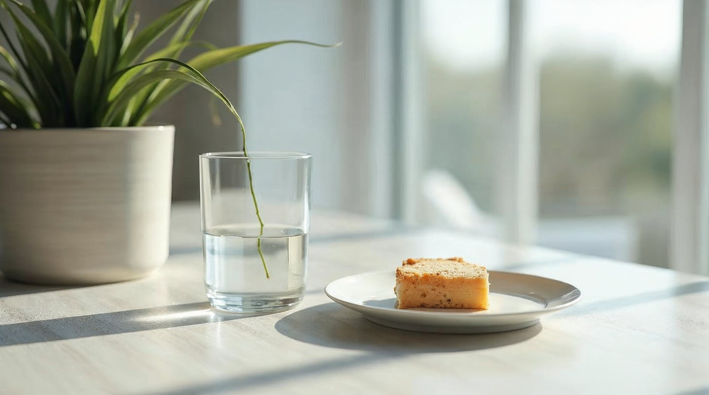
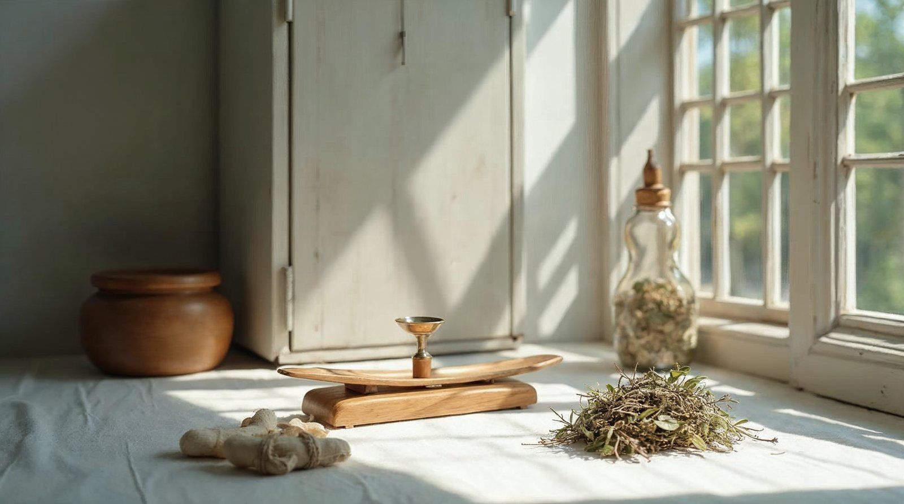
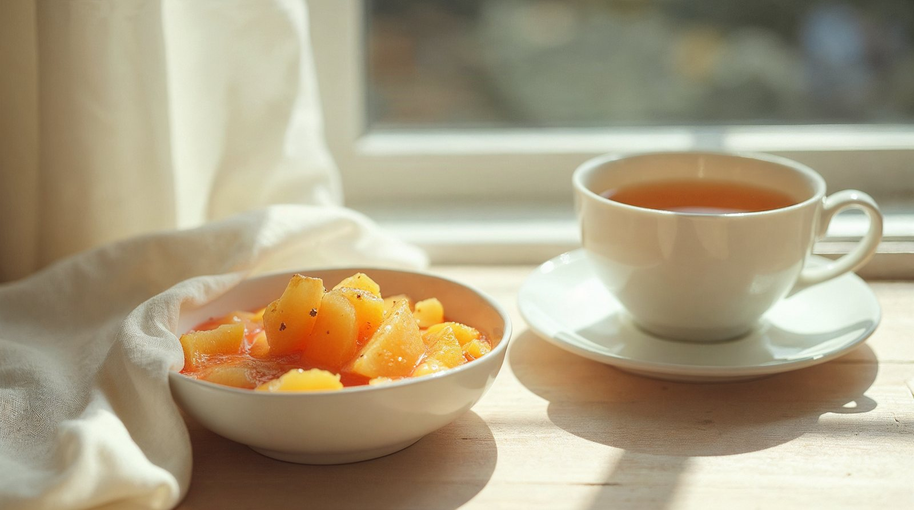
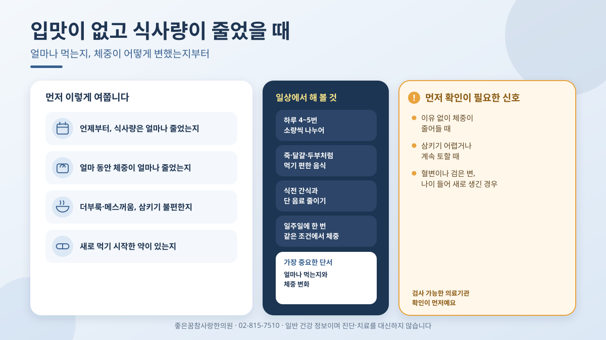

이종호 한의사 감수좋은꿈참사랑한의원 대표원장 (한의사 면허번호 19769)발행 2026-11-26 · 수정 2026-11-26
이 글의 차례
아침 식탁에서 밥을 두어 숟가락 뜨다 수저를 내려놓습니다. 배가 고프지 않은 것도 아닌데 넘어가지가 않지요. 이렇게 입맛이 떨어졌을 때는 잠, 마음, 소화, 계절 가운데 어디가 흔들렸는지 먼저 살피고, 끼니 리듬과 작은 양부터 다시 맞춰 보는 것이 순서입니다.
그래서 저는 얼마나 드시는지와 체중이 어떻게 변했는지를 먼저 여쭙고, 모든 분께 맥을 짚습니다. 다만 몇 달 사이 체중이 눈에 띄게 줄었거나 삼키기 어렵다면 한의원보다 검사가 먼저입니다.
진료실에서 입맛 이야기는 대개 다른 불편 끝에 나옵니다. 피곤하다, 잠이 얕다는 말씀을 한참 하시다가 요즘은 밥맛도 없다고 조용히 덧붙이시지요. 먹는 일쯤은 알아서 해야 한다고 여겨 오신 시간이 그 말투에 묻어 있습니다.
먹는 일이 숙제처럼 느껴지는 하루는 생각보다 지칩니다. 차려 준 밥을 남기는 게 미안하고, 왜 이렇게 못 먹느냐는 가족의 걱정도 마음에 얹힙니다. 입맛이 없는 것은 의지가 약해서가 아닙니다. 몸이 지금 사정을 알려 오는 중일 수 있습니다.
왜 입맛이 먼저 떨어질까요
입맛은 몸 상태를 꽤 솔직하게 비춥니다. 몸이 지치거나 마음이 무거울 때 가장 먼저 줄어드는 것이 밥맛이라는 분이 많습니다. 제가 진료실에서 짚어 보는 사정은 크게 잠, 마음, 소화, 계절 네 갈래입니다.
잠: 덜 잔 다음 날의 아침 밥상
잠이 얕고 자주 깬 다음 날은 아침 밥상이 유독 멀게 느껴집니다. 잠이 부족하면 식욕 조절이 흔들릴 수 있는데, 어떤 분은 단것이 당기고 어떤 분은 아예 입맛을 잃습니다. 잠이 보약이라는 말을 진료실에서 늘 붙드는 이유이기도 합니다.
늦은 저녁이나 야식은 소화가 덜 된 채 눕게 해 잠을 얕게 만들고, 다음 날 아침 입맛을 또 밀어냅니다. 잠과 입맛이 서로를 끌어내리는 고리가 생기는 셈입니다. 그래서 이 고리는 저녁 시각을 조금 앞당기는 데서부터 풀어 보는 경우가 많습니다.
마음: 걱정이 먼저 배를 채울 때
걱정거리가 크면 배가 이미 찬 것처럼 느껴진다는 분이 있습니다. 긴장이 오래 이어지면 소화가 더디고 잠이 얕아지는 경우가 있습니다. 이사, 퇴직, 가족을 돌보는 일처럼 생활이 크게 바뀌는 시기에도 입맛이 먼저 흔들리곤 합니다.
몸과 마음을 함께 본다는 것은 입맛 없음을 마음 탓으로 돌린다는 뜻이 아닙니다. 같은 밥상이라도 마음이 무거운 날 더 넘어가지 않을 수 있어 그 흐름을 함께 보려는 것입니다. 마음 이야기는 편하신 만큼만 들려주셔도 됩니다.
두 주 넘게 거의 매일 기분이 가라앉고, 예전에 즐겁던 일에도 흥미가 사라졌다면 입맛보다 마음을 먼저 살펴야 할 때일 수 있습니다. 그럴 때는 혼자 버티지 말고 가까운 사람이나 의료진에게 먼저 말씀해 주세요.
소화: 먹으면 불편해서 덜 먹게 될 때
먹고 나면 더부룩하거나 명치가 답답한 날이 이어지면, 몸은 다음 끼니를 미루는 쪽을 택합니다. 변비가 있어 배가 늘 차 있는 느낌일 때도 먹고 싶은 마음이 줄어듭니다. 이런 분은 입맛보다 먹은 뒤의 불편을 먼저 살핍니다.
식후 더부룩함이 주된 불편이라면 식사 뒤에 속이 더부룩한 것은 무엇 때문이고, 속쓰림과는 어떻게 다른가요?를, 몇 숟가락 만에 배가 차오른다면 조금만 먹어도 금방 배가 부를 때는 무엇을 살펴보나요?를 함께 읽어 보세요.
새로 드시기 시작한 약이 속을 불편하게 하거나 입맛을 바꾸는 경우도 있습니다. 그래서 약 이름을 꼭 함께 여쭙습니다. 하루에 드시는 약이 한 움큼인 어르신이라면 더욱 그렇습니다.
계절: 해가 짧아지는 무렵
계절도 입맛을 흔듭니다. 여름에는 더위에 지쳐 밥이 넘어가지 않는다는 분이 많고, 요즘처럼 해가 짧아지고 바깥 활동이 줄어드는 늦가을과 겨울에는 몸을 덜 쓰니 배고픔도 덜하고 기분까지 가라앉는다는 분이 있습니다.
한의학에서는 맥도 계절에 따라 다르게 봅니다. 봄에는 조금 팽팽하고 여름에는 넘실거리며, 가을에는 가볍게 뜨고 겨울에는 가라앉는 맥을 자연스럽게 여깁니다. 계절이 바뀌는 무렵 몸이 적응하느라 입맛이 잠시 흔들리는 것도 그 흐름의 하나로 봅니다.
다만 체중이 줄고 있거나 몇 주째 식사량이 줄어 있다면 계절 탓으로만 넘길 일이 아닙니다. 그때는 계절보다 몸을 먼저 확인해야 합니다.
어르신의 입맛은 가족이 함께 봐 주세요
어르신은 입맛이 줄어도 나이 들면 원래 그렇다며 넘기시는 경우가 많습니다. 혼자 드시는 끼니가 늘거나 한 달쯤 집에만 계시면 점심 드시러 나서는 일조차 귀찮아지기 쉽습니다. 그 마음이 들면 몸은 더 약해집니다.
그래서 어르신의 식사량이 눈에 띄게 줄었다면 가족이 함께 살펴 주셨으면 합니다. 무엇을 얼마나 드시는지, 옷이 헐거워졌는지, 사레가 잦은지는 곁에서 지켜보는 분이 더 잘 아실 때가 많습니다. 진료에 함께 오시면 그 이야기를 같이 듣겠습니다.
나이가 들어 새로 생긴 식욕 저하나 체중 감소는 원인을 먼저 확인해야 합니다. 어르신이 입맛이 줄고 조금만 드셔도 더부룩하다고 하실 때 무엇을 여쭙는지는 소화가 오래 불편할 때 한의원에서는 무엇을 먼저 묻나요?에도 적어 두었습니다.
예를 들면 이런 경우입니다
예를 들어 마감이 몰린 몇 주 동안 점심을 커피로 넘기고 밤늦게 한 끼를 몰아 먹는 경우라면, 아침이 들어가지 않는 것이 어쩌면 당연합니다. 저녁을 한 시간 앞당기고 양을 줄인 날, 다음 날 아침 속이 어땠는지부터 적어 봅니다.
예를 들어 혼자 지내시며 끼니를 차 한 잔과 떡 몇 조각으로 때우다 식사량이 줄어든 어르신의 경우라면, 체중 변화와 드시는 약부터 확인합니다. 그다음 꺼내 드시기 쉬운 반찬 한두 가지와, 복지관 점심처럼 누군가와 함께 드실 수 있는 자리를 찾아봅니다.
예를 들어 날이 추워지며 바깥에 나가는 일이 줄고, 해 질 무렵부터 기분이 가라앉아 저녁을 거르게 되는 경우라면, 낮에 햇빛을 보며 걷는 20분과 저녁 드실 시각을 함께 정해 봅니다. 그 주의 잠과 기분도 나란히 적어 봅니다.

스스로 점검해 보세요
- 평소 먹던 양의 절반도 못 먹는 날이 일주일 넘게 이어진다
- 몇 달 사이 옷이 헐거워지거나 체중이 줄었다
- 배는 고픈데 몇 숟가락만 먹어도 더부룩하다
- 잠을 설친 다음 날 아침은 거의 넘어가지 않는다
- 기분이 가라앉은 시기와 입맛이 줄어든 시기가 겹친다
- 끼니 시간이 날마다 다르고 커피나 간식으로 넘기는 날이 많다
- 최근 새로 먹기 시작한 약이 있다
세 가지 넘게 해당한다면 어느 리듬부터 손볼지 함께 정해 보면 좋겠습니다. 표시한 목록을 진료 때 그대로 보여 주셔도 됩니다. 두 번째 항목에 표시하셨다면 그것만큼은 검사부터 먼저 챙겨 주세요.

먼저 이렇게 여쭙니다
- 언제부터 입맛이 줄었고, 지금은 평소의 몇 분의 일쯤 드시나요?
- 체중은 얼마 동안 얼마나 달라졌나요? 옷이 헐거워지지는 않았나요?
- 배가 고프지 않은 쪽인가요, 고프지만 먹으면 불편한 쪽인가요?
- 속이 더부룩하거나 메스꺼운지, 삼킬 때 걸리지는 않는지요?
- 잠은 어떠시고, 요즘 마음에 걸린 일이 있나요?
- 새로 드시기 시작한 약이나 영양제가 있나요?
배가 고프지 않은 것과, 고프지만 먹으면 불편한 것은 비슷해 보여도 살필 곳이 다릅니다. 앞쪽이라면 잠과 마음, 하루 리듬을 넓게 보고, 뒤쪽이라면 먹은 뒤의 소화부터 살피는 경우가 많습니다. 처음부터 딱 잘라 말씀하지 못하셔도 괜찮습니다.

일상에서 먼저 해 볼 수 있는 것
- 끼니 시간을 날마다 비슷하게 정해 두고, 배가 덜 고파도 그 시각에 식탁에 앉기
- 한 번에 많이 먹으려 하지 말고 작은 그릇에 담아 하루 네다섯 번으로 나누기
- 죽, 달걀, 두부, 따뜻한 국처럼 넘기기 편한 음식부터 시작하기
- 식사 직전의 단 음료와 간식은 줄이고, 물은 끼니 사이에 나눠 마시기
- 낮에 20분쯤 햇빛을 보며 걷기
- 일주일에 한 번, 같은 시각 같은 조건에서 체중 재기
작은 양부터 시작하자고 말씀드리면 그걸로 되겠느냐고 되물으시는 분이 있습니다. 한 끼를 억지로 많이 드시면 속이 부담스러워 다음 끼니를 또 거르기 쉽습니다. 작은 그릇이라도 다 비웠다는 기억이 다음 끼니 앞에서 마음을 조금 가볍게 해 주기도 합니다.
끼니 시간을 일정하게 두라는 것도 같은 뜻입니다. 끼니 시간이 날마다 다르면 몸이 언제 먹고 언제 쉬어야 할지 알기 어려울 수 있습니다. 배가 덜 고픈 날에도 정한 시각에 앉아 몇 숟가락이라도 드셔 보세요.
좋다는 음식을 한꺼번에 챙기기보다 지금 넘어가는 것부터 드셔도 괜찮습니다. 누구에게나 좋다는 방법이 어떤 분에게는 맞지 않을 때가 있습니다. 잡곡이 좋다는 말만 듣고 드시다가 속이 불편해지는 분도 계십니다.
영양 음료는 끼니를 보충하는 데 쓸 수 있지만, 지병이 있거나 드시는 약이 있으면 성분을 의사나 약사와 확인해 주세요.
기운이 없다며 보약부터 떠올리시는 분도 계십니다. 저는 무엇을 채울지보다 왜 입맛이 떨어졌는지를 먼저 살핍니다. 소화가 부담스러운 상태에서는 약도 부담이 될 수 있기 때문입니다.
감기나 바쁜 일정 뒤 며칠 입맛이 없는 것은 조금씩 나누어 드시며 지켜보셔도 됩니다. 두 주 넘게 식사량이 줄어 있거나 체중이 계속 빠진다면 상담과 함께 필요한 검사를 받아 보세요.
한의원에서 함께 살필 수 있는 경우
- 검사에서 큰 이상이 없다고 들었지만 몇 주째 식사량이 줄어 있는 경우
- 먹으면 더부룩하고 불편해서 끼니를 자꾸 미루게 되는 경우
- 잠이 얕아지고 기운이 떨어지면서 입맛도 함께 줄어든 경우
- 손발이 차고 쉽게 지쳐 식사를 늘리기 어려운 경우
좋은꿈참사랑한의원에 처음 오시면 입맛이 줄어든 시기와 지금 드시는 양, 체중 변화, 드시는 약부터 여쭙습니다. 삼킴 곤란이나 반복되는 구토, 검은 변 같은 신호가 없는지 먼저 확인하고, 받으신 검사나 건강검진 결과지가 있으면 함께 봅니다.
그다음 양손을 올려 봐 달라고 말씀드리고 맥을 짚습니다. 처음 오신 분이든 다시 오신 분이든 저는 모든 분의 맥을 짚습니다. 맥을 짚으며 잠과 대변, 손발의 온기, 마음 상태를 여쭙고, 필요하다고 판단될 때 혀와 배를 살핍니다.
맥이 손끝에 실처럼 가늘게 닿거나 힘없이 느슨하게 닿을 때, 한의학에서는 기운이 모자란 쪽이나 소화기의 기운이 처진 쪽을 함께 살핍니다. 다만 맥 하나로 결론을 내리지 않고 혀와 배, 하루의 이야기와 맞춰 봅니다.
필요하다고 판단되면 인바디 770으로 근육과 체지방이 어떻게 달라졌는지 함께 봅니다. 잘 못 드신 기간이 길었다면 체중계 숫자만으로는 알기 어려운 근육의 변화를 살피는 데 참고가 됩니다. 숫자는 질문을 시작하게 해 주고, 답은 대개 생활 속에 있습니다.
이렇게 모은 이야기를 놓고 침이나 한약 상담 가운데 맞는 방향과, 이번 주에 지켜 볼 끼니 리듬 한두 가지를 함께 정합니다. 한약을 상담하더라도 소화가 부담스러운 상태라면 그 점을 먼저 헤아려 신중하게 정합니다. 검사에서 진단이나 약 조절이 필요해 보이면 내과 진료를 먼저 안내합니다.
다시 오시면 맥을 다시 짚고, 지난번 이후 식사량과 체중, 잠과 기분이 어땠는지부터 이어서 여쭙습니다. 정한 리듬을 지키기 어려웠던 사정까지 들어야 다음 계획을 무리 없이 세울 수 있습니다.
이렇게 기록해 오시면 상담이 쉬워집니다
거창한 일기는 필요 없습니다. 끼니마다 평소 양의 몇 분의 일을 드셨는지 반 공기, 세 숟가락처럼 적고, 그 옆에 먹은 뒤 속이 어땠는지 한 줄을 붙여 주세요.
일주일에 한 번 잰 체중, 지난밤 잠든 시각과 깬 횟수, 그날의 기분을 0부터 10까지 숫자로 적어 오시면 흐름이 한눈에 보입니다. 드시는 약과 영양제는 약봉지째 가져오셔도 됩니다. 어르신이라면 곁에서 식사를 지켜보는 가족이 대신 적어 주셔도 좋습니다.
이런 증상은 먼저 확인이 필요합니다
- 원하지 않았는데 몇 달 사이 체중이 눈에 띄게 줄어드는 경우
- 음식을 삼키기 어렵거나 삼킬 때 걸리는 느낌이 이어지는 경우
이런 신호가 있으면 한의원보다 가까운 병원이나 응급실을 먼저 찾으세요.
입맛은 몸이 지금 어떻게 지내는지 조용히 알려 주는 신호입니다. 억지로 많이 드시려 애쓰기보다 정한 시각에 작은 그릇 하나부터 함께 시작해 보면 좋겠습니다. 다음에 오시면 이번 주에 가장 편하게 드신 끼니가 언제였는지, 그날 잠은 어땠는지부터 여쭙겠습니다.

여쭙는 것
- 언제부터 입맛이 줄었고, 지금은 평소의 몇 분의 일쯤 드시나요?
- 체중은 얼마 동안 얼마나 달라졌나요? 옷이 헐거워지지는 않았나요?
- 배가 고프지 않은 쪽인가요, 고프지만 먹으면 불편한 쪽인가요?
생활에서 해 볼 것
- 끼니 시간을 날마다 비슷하게 정해 두고, 배가 덜 고파도 그 시각에 식탁에 앉기
- 한 번에 많이 먹으려 하지 말고 작은 그릇에 담아 하루 네다섯 번으로 나누기
- 죽, 달걀, 두부, 따뜻한 국처럼 넘기기 편한 음식부터 시작하기
한의원에서 함께 살필 것
- 검사에서 큰 이상이 없다고 들었지만 몇 주째 식사량이 줄어 있는 경우
- 먹으면 더부룩하고 불편해서 끼니를 자꾸 미루게 되는 경우
- 잠이 얕아지고 기운이 떨어지면서 입맛도 함께 줄어든 경우
먼저 확인이 필요한 신호
- 원하지 않았는데 몇 달 사이 체중이 눈에 띄게 줄어드는 경우
- 음식을 삼키기 어렵거나 삼킬 때 걸리는 느낌이 이어지는 경우
한눈에 보는 표
| 구분 | 핵심 |
|---|---|
| 여쭙는 것 | 언제부터 입맛이 줄었고, 지금은 평소의 몇 분의 일쯤 드시나요? 체중은 얼마 동안 얼마나 달라졌나요? 옷이 헐거워지지는 않았나요? |
| 생활에서 해 볼 것 | 끼니 시간을 날마다 비슷하게 정해 두고, 배가 덜 고파도 그 시각에 식탁에 앉기 한 번에 많이 먹으려 하지 말고 작은 그릇에 담아 하루 네다섯 번으로 나누기 |
| 한의원에서 함께 살필 것 | 검사에서 큰 이상이 없다고 들었지만 몇 주째 식사량이 줄어 있는 경우 먹으면 더부룩하고 불편해서 끼니를 자꾸 미루게 되는 경우 |
| 먼저 확인이 필요한 신호 | 원하지 않았는데 몇 달 사이 체중이 눈에 띄게 줄어드는 경우 음식을 삼키기 어렵거나 삼킬 때 걸리는 느낌이 이어지는 경우 |
자주 묻는 질문
입맛이 없을 때 억지로라도 많이 먹어야 하나요?
한 끼를 억지로 많이 드시면 속이 부담스러워 다음 끼니를 거르기 쉽습니다. 정한 시각에 작은 양을 나누어 드시는 편이 무난합니다.
체중이 줄었는데 한의원에 먼저 가도 되나요?
원하지 않았는데 몇 달 사이 체중이 눈에 띄게 줄었다면 내과 검사가 먼저입니다. 검사 결과를 가져오시면 함께 보며 상담합니다.
약 때문에 입맛이 없을 수도 있나요?
드시는 약이 속을 불편하게 하거나 입맛에 영향을 줄 수 있어 약 목록을 확인합니다. 약은 처방한 의사와 상의 없이 줄이거나 끊지 마세요.
부모님 식사량이 줄었는데 언제 진료를 받아 보시게 해야 하나요?
몇 주째 평소의 절반도 못 드시거나, 옷이 헐거워질 만큼 체중이 줄었거나, 사레가 잦고 삼키기 힘들어하시면 내과 진료를 먼저 받아 보시게 해 주세요. 가족이 함께 오시면 식사 모습도 같이 듣습니다.
좋은꿈참사랑한의원은 재진 때 지난번 이야기부터 이어서 여쭙니다. 진료시간과 예약은 오시는 길에서 확인하세요.
어디서 상담받을 수 있나요?
좋은꿈참사랑한의원은 서울 동작구 만양로2길 2 신성빌딩 3층·5층(서울 동작구 상도동, 7호선 상도역 3번 출구 근처)에 있습니다. 한의사 3명(이종호 대표원장, 조영기 수석진료원장, 정원영 진료원장)이 진료합니다. 진료시간은 평일 09:30~20:00(점심 13:00~14:00), 토·일·공휴일 09:30~15:00이며, 방문 전 전화로 확인을 권합니다. 예약은 네이버 예약, 카카오톡 상담, 전화 02-815-7510로 받습니다.
이 글은 일반적인 건강 정보이며 개인의 진단이나 치료를 대신하지 않습니다. 증상이 있거나 복용 중인 약이 있다면 진료를 통해 확인하세요. 치료 효과는 개인마다 다를 수 있습니다.
작성 기준: 일반적으로 알려져 있는 건강 정보를 참고해 정리했습니다(대표원장 감수). 증상 기록은 1~2주 동안 하루 1회, 비슷한 시간에 적어 오시면 지난 상태와 비교하기 쉽습니다.